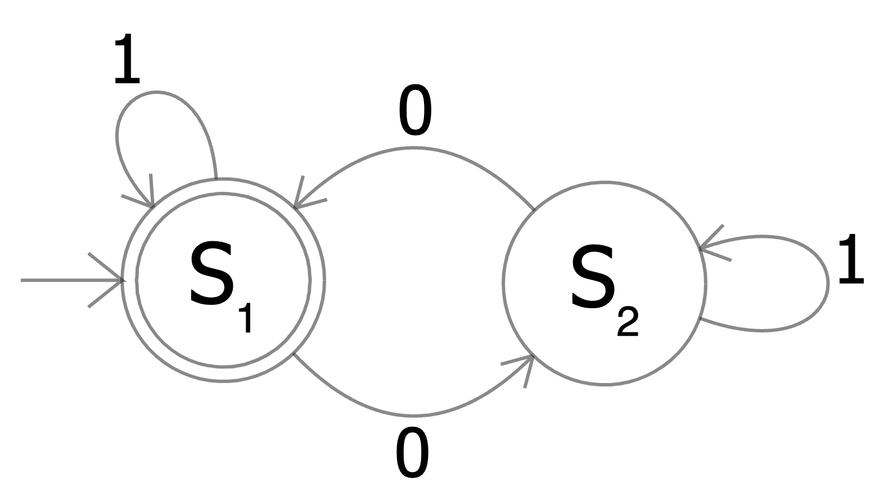

Regular expressions (regex) are a formal language for describing patterns in text. They provide a concise, declarative way to match, extract, and transform strings. In NLP, regular expressions serve as fundamental tools for text preprocessing, tokenization, pattern extraction, and data cleaning—tasks that precede nearly every modeling pipeline.
This article covers regex syntax comprehensively, from basic literal matching through advanced features like lookahead assertions, with attention to NLP applications throughout.
A regular expression is a sequence of characters that defines a search pattern. The pattern can match:
cat matches the literal text "cat"[aeiou] matches any vowela+ matches one or more 'a' characterscat|dog matches "cat" or "dog"\b[A-Z][a-z]+\b matches capitalized wordsRegular expressions originated in formal language theory (Kleene, 1956) and were first implemented in Unix tools like grep, sed, and awk. Today they're built into virtually every programming language.
Regular expressions appear throughout NLP workflows:
Preprocessing: Normalizing whitespace, removing HTML tags, standardizing punctuation
# Remove HTML tags
<[^>]+> → (empty string)
# Normalize whitespace
\s+ → (single space)
Tokenization: Splitting text into words, sentences, or other units
# Simple word tokenization
\b\w+\b
# Sentence boundary detection
[.!?]+\s+(?=[A-Z])
Pattern extraction: Finding emails, URLs, dates, monetary amounts
# Email pattern
[\w.+-]+@[\w-]+\.[\w.-]+
# Date pattern (MM/DD/YYYY)
\d{1,2}/\d{1,2}/\d{4}
Text normalization: Standardizing formats, expanding contractions
# Contractions
(\w+)'ll → \1 will
(\w+)n't → \1 not
Most characters match themselves literally:
| Pattern | Matches |
|---|---|
cat |
"cat" in "the cat sat" |
123 |
"123" in "room 123" |
hello world |
"hello world" exactly |
Matching is case-sensitive by default: Cat does not match "cat".
Certain characters have special meaning in regex. These metacharacters are:
. ^ $ * + ? { } [ ] \ | ( )
To match a metacharacter literally, escape it with a backslash:
| Pattern | Matches |
|---|---|
\. |
A literal period |
\$ |
A literal dollar sign |
<!--MATHdcea4b0641b549f58b38811671a80233END--> |
|
- \ — escape character: use \\ |
|
- ^ — negation if first: use \^ or place not first |
|
- - — range operator: use \- or place first/last |
Example: [-a-z] or [a-z-] matches lowercase letters or hyphen.
Some regex engines support POSIX classes (inside brackets):
| Class | Matches |
|---|---|
[:alpha:] |
Alphabetic characters |
[:digit:] |
Digits |
[:alnum:] |
Alphanumeric |
[:space:] |
Whitespace |
[:punct:] |
Punctuation |
[:upper:] |
Uppercase letters |
[:lower:] |
Lowercase letters |
Usage: [[:alpha:]] matches any letter. Python's re module does not support POSIX classes directly; use shorthand or explicit ranges instead.
Anchors match positions in the string rather than characters. They have zero width—they don't consume any characters.
| Anchor | Matches |
|---|---|
^ |
Start of string (or line in multiline mode) |
$ |
End of string (or line in multiline mode) |
Examples:
| Pattern | Matches | Does not match |
|---|---|---|
^The |
"The cat" | "See The cat" |
end$ |
"the end" | "the end." |
^only$ |
"only" (entire string) | "only one" |
NLP application: ^[A-Z] checks if a sentence starts with a capital letter. [.!?]$ checks if text ends with terminal punctuation.
| Anchor | Matches |
|---|---|
\b |
Word boundary (between \w and \W) |
\B |
Non-word boundary |
Examples:
| Pattern | Matches in "cat catalog" |
|---|---|
\bcat\b |
"cat" only |
cat |
"cat" and "cat" in "catalog" |
\bcat |
"cat" and "cat" at start of "catalog" |
cat\b |
"cat" only |
NLP application: Word boundaries are essential for matching whole words. Without \b, searching for "the" would match inside "other", "them", "weather".
# Find all instances of the word "the" (not "other", "them", etc.)
pattern = r'\bthe\b'
Some engines distinguish string vs. line anchors:
| Anchor | Matches |
|---|---|
\A |
Start of string only (ignores multiline mode) |
\Z |
End of string only |
\z |
Absolute end (before final newline, if any) |
Quantifiers specify how many times the preceding element should match.
| Quantifier | Meaning |
|---|---|
* |
Zero or more |
+ |
One or more |
? |
Zero or one (optional) |
Examples:
| Pattern | Matches |
|---|---|
ab*c |
"ac", "abc", "abbc", "abbbc", ... |
ab+c |
"abc", "abbc", "abbbc", ... (not "ac") |
ab?c |
"ac", "abc" only |
colou?r |
"color", "colour" |
Curly braces specify exact repetition counts:
| Quantifier | Meaning |
|---|---|
{n} |
Exactly n times |
{n,} |
n or more times |
{n,m} |
Between n and m times (inclusive) |
Examples:
| Pattern | Matches |
|---|---|
a{3} |
"aaa" exactly |
a{2,4} |
"aa", "aaa", "aaaa" |
a{2,} |
"aa", "aaa", "aaaa", ... |
\d{3}-\d{4} |
"555-1234" (phone number fragment) |
\b\w{3,5}\b |
Words of 3–5 characters |
By default, quantifiers are greedy—they match as much as possible while still allowing the overall pattern to match.
Pattern: <.*>
Text: <b>bold</b>
Match: <b>bold</b> (entire string, not just <b>)
Adding ? after a quantifier makes it lazy (or reluctant)—it matches as little as possible:
| Greedy | Lazy |
|---|---|
* |
*? |
+ |
+? |
? |
?? |
{n,m} |
{n,m}? |
Pattern: <.*?>
Text: <b>bold</b>
Matches: <b> and </b> (separately)
NLP application: When extracting content from HTML or XML, lazy quantifiers prevent over-matching:
# Extract text between tags (lazy)
pattern = r'<title>(.*?)</title>'
Some regex engines support possessive quantifiers (*+, ++, ?+, {n,m}+) that never backtrack. Python's re module does not support these, but the regex module does.
Parentheses serve two purposes: grouping elements and capturing matched text.
Parentheses group elements for quantification:
| Pattern | Matches |
|---|---|
(ab)+ |
"ab", "abab", "ababab", ... |
(ha)+ |
"ha", "haha", "hahaha", ... |
(\d{3})-(\d{4}) |
"555-1234" (captures "555" and "1234") |
By default, parentheses create capturing groups. The matched text is stored and can be referenced later.
import re
match = re.search(r'(\d{3})-(\d{4})', 'Call 555-1234')
print(match.group(0)) # '555-1234' (entire match)
print(match.group(1)) # '555' (first group)
print(match.group(2)) # '1234' (second group)
Groups are numbered left-to-right by opening parenthesis:
Pattern: ((a)(b(c)))
Groups: 12 3 4
Named groups improve readability:
pattern = r'(?P<area>\d{3})-(?P<number>\d{4})'
match = re.search(pattern, 'Call 555-1234')
print(match.group('area')) # '555'
print(match.group('number')) # '1234'
Syntax: (?P<name>...) in Python; (?<name>...) in many other engines.
NLP application: Named groups make pattern extraction self-documenting:
# Extract date components
date_pattern = r'(?P<month>\d{1,2})/(?P<day>\d{1,2})/(?P<year>\d{4})'
When grouping is needed without capturing, use (?:...):
# Group for quantification, but don't capture
pattern = r'(?:https?://)?www\.\w+\.\w+'
Non-capturing groups are slightly faster and don't clutter match results.
Backreferences match the same text that a capturing group matched:
| Syntax | Meaning |
|---|---|
\1, \2, ... |
Match same text as group 1, 2, ... |
(?P=name) |
Match same text as named group |
Examples:
| Pattern | Matches |
|---|---|
(\w+) \1 |
"the the", "is is" (repeated words) |
(['"])(.*?)\1 |
Quoted strings with matching quotes |
<(\w+)>.*?</\1> |
Matching HTML open/close tags |
NLP application: Finding repeated words (a common error):
pattern = r'\b(\w+)\s+\1\b' # Matches "the the", "is is", etc.
The pipe | matches either the expression before or after it:
| Pattern | Matches |
|---|---|
cat\|dog |
"cat" or "dog" |
gray\|grey |
"gray" or "grey" |
Mon\|Tue\|Wed |
"Mon", "Tue", or "Wed" |
Alternation has low precedence. To limit its scope, use parentheses:
| Pattern | Matches |
|---|---|
gray\|grey |
"gray" or "grey" |
gr(a\|e)y |
"gray" or "grey" (equivalent) |
I love (cats\|dogs) |
"I love cats" or "I love dogs" |
Without parentheses:
Pattern: I love cats|dogs
Matches: "I love cats" or "dogs" (not "I love dogs")
NLP application: Matching multiple variants of a concept:
# Match various ways to express uncertainty
uncertain = r'\b(maybe|perhaps|possibly|might|could be)\b'
Lookaround assertions check what comes before or after a position without consuming characters. They're zero-width, like anchors.
| Syntax | Name | Meaning |
|---|---|---|
(?=...) |
Positive lookahead | What follows must match |
(?!...) |
Negative lookahead | What follows must not match |
Examples:
| Pattern | Matches |
|---|---|
\d+(?=%) |
Digits followed by % (but % not in match) |
q(?!u) |
'q' not followed by 'u' |
\b\w+(?=ing\b) |
Base of words ending in "ing" |
# Find amounts with dollar sign after
pattern = r'\d+(?=\$)'
text = "Prices: 10<!--MATHbabe26122cab48f5ad863758a28f35a2END--> 30 cents"
# Matches: ['10', '20']
| Syntax | Name | Meaning |
|---|---|---|
(?<=...) |
Positive lookbehind | What precedes must match |
(?<!...) |
Negative lookbehind | What precedes must not match |
Examples:
| Pattern | Matches |
|---|---|
| `(?<=\$)\d+` | Digits preceded by $ | |
(?<!un)happy |
"happy" not preceded by "un" |
(?<=Mr\. )\w+ |
Name after "Mr. " |
Limitation: In many regex engines (including Python's re), lookbehind must be fixed-width. You cannot use *, +, or {n,m} inside lookbehind. The regex module removes this restriction.
Tokenization without consuming delimiters:
# Split on word boundaries, keeping all characters
pattern = r'(?<=\w)(?=\W)|(?<=\W)(?=\w)'
Context-sensitive matching:
# Find "bank" when it means financial institution (preceded by "$" or "money")
pattern = r'(?<=\$|money\s)\bbank\b'
Sentence boundary detection:
# Period followed by space and capital letter
pattern = r'(?<=[.!?])\s+(?=[A-Z])'
Flags modify how the regex engine interprets patterns.
| Flag | Python constant | Effect |
|---|---|---|
i |
re.IGNORECASE |
Case-insensitive matching |
m |
re.MULTILINE |
^ and $ match line boundaries |
s |
re.DOTALL |
. matches newline |
x |
re.VERBOSE |
Allow whitespace and comments |
import re
pattern = r'the'
text = "The THE the"
re.findall(pattern, text, re.IGNORECASE) # ['The', 'THE', 'the']
NLP application: Matching words regardless of capitalization is often needed, especially at sentence boundaries.
Without MULTILINE, ^ and $ match only string start/end:
text = "Line 1\nLine 2\nLine 3"
# Default: ^ matches string start only
re.findall(r'^Line', text) # ['Line']
# Multiline: ^ matches each line start
re.findall(r'^Line', text, re.MULTILINE) # ['Line', 'Line', 'Line']
Without DOTALL, . does not match newlines:
text = "<tag>\ncontent\n</tag>"
# Default: . doesn't match newline
re.search(r'<tag>.*</tag>', text) # None
# Dotall: . matches everything including newline
re.search(r'<tag>.*</tag>', text, re.DOTALL) # Match found
Verbose mode allows whitespace and comments for readability:
phone_pattern = re.compile(r'''
^ # Start of string
(?:\+1[-.\s]?)? # Optional country code
$? # Optional opening paren
(\d{3}) # Area code
$? # Optional closing paren
[-.\s]? # Optional separator
(\d{3}) # Exchange
[-.\s]? # Optional separator
(\d{4}) # Subscriber number
$ # End of string
''', re.VERBOSE)
NLP application: Complex patterns for entity extraction benefit greatly from verbose formatting.
Use the bitwise OR operator:
pattern = re.compile(r'pattern', re.IGNORECASE | re.MULTILINE | re.DOTALL)
Flags can be set within the pattern:
r'(?i)pattern' # Case-insensitive
r'(?im)pattern' # Case-insensitive + multiline
r'(?i:pattern)' # Flag applies only to group
NLP often requires processing text in multiple languages. Regex Unicode support is essential.
The \p{...} syntax matches characters by Unicode property (supported in Python's regex module, not re):
| Pattern | Matches |
|---|---|
\p{L} |
Any letter (any script) |
\p{Lu} |
Uppercase letter |
\p{Ll} |
Lowercase letter |
\p{N} |
Any number |
\p{P} |
Punctuation |
\p{Z} |
Separator (space, line, paragraph) |
\p{Script=Greek} |
Greek letters |
\p{Script=Han} |
Chinese characters |
NLP application: Multilingual tokenization requires matching letters from all scripts:
import regex
# Match words in any language
pattern = r'\p{L}+'
text = "Hello 世界 مرحبا мир"
regex.findall(pattern, text) # ['Hello', '世界', 'مرحبا', 'мир']
Python's re module has limited Unicode support:
\w, \d, \s match only ASCII by defaultre.UNICODE flag or (?u) for broader matchingregex moduleimport re
# ASCII only by default
re.findall(r'\w+', 'café naïve') # ['caf', 'na', 've'] in some contexts
# With Unicode flag
re.findall(r'\w+', 'café naïve', re.UNICODE) # ['café', 'naïve']
Without \p{...}, use Unicode ranges:
# Chinese characters (CJK Unified Ideographs)
chinese = r'[\u4e00-\u9fff]+'
# Arabic
arabic = r'[\u0600-\u06ff]+'
# Cyrillic
cyrillic = r'[\u0400-\u04ff]+'
re Module| Function | Purpose |
|---|---|
re.search(pattern, string) |
Find first match anywhere in string |
re.match(pattern, string) |
Match at beginning of string only |
re.fullmatch(pattern, string) |
Match entire string |
re.findall(pattern, string) |
Return list of all matches |
re.finditer(pattern, string) |
Return iterator of match objects |
re.sub(pattern, repl, string) |
Replace matches |
re.split(pattern, string) |
Split string by pattern |
re.compile(pattern) |
Compile pattern for reuse |
search(), match(), and finditer() return match objects:
match = re.search(r'(\w+)@(\w+)\.(\w+)', 'contact: user@example.com')
match.group(0) # 'user@example.com' (entire match)
match.group(1) # 'user'
match.group(2) # 'example'
match.group(3) # 'com'
match.groups() # ('user', 'example', 'com')
match.start() # Starting position of match
match.end() # Ending position of match
match.span() # (start, end) tuple
re.sub() replaces matches with a replacement string:
# Simple replacement
re.sub(r'\d+', 'NUM', 'Room 123, Floor 4') # 'Room NUM, Floor NUM'
# Using backreferences
re.sub(r'(\w+), (\w+)', r'\2 \1', 'Doe, John') # 'John Doe'
# Using a function
def double(match):
return str(int(match.group()) * 2)
re.sub(r'\d+', double, '3 cats and 4 dogs') # '6 cats and 8 dogs'
NLP application: Text normalization through substitution:
# Expand contractions
text = "I can't don't won't"
text = re.sub(r"can't", "cannot", text)
text = re.sub(r"n't", " not", text)
# Result: "I cannot do not will not"
re.split() splits a string by pattern:
re.split(r'\s+', 'one two\tthree') # ['one', 'two', 'three']
re.split(r'[,;]\s*', 'a, b; c,d') # ['a', 'b', 'c', 'd']
# Keep delimiters using capturing group
re.split(r'([.!?])', 'Hi! Bye.') # ['Hi', '!', ' Bye', '.', '']
Compile patterns that are used repeatedly:
email_pattern = re.compile(r'[\w.+-]+@[\w-]+\.[\w.-]+')
# Use compiled pattern
email_pattern.search(text)
email_pattern.findall(text)
email_pattern.sub('[EMAIL]', text)
Compilation improves performance when a pattern is used multiple times.
Word tokenization (simple):
pattern = r'\b\w+\b'
tokens = re.findall(pattern, text)
Word tokenization (with punctuation handling):
# Match words or punctuation sequences
pattern = r"\w+|[^\w\s]+"
Sentence tokenization:
# Split on sentence-ending punctuation followed by space and capital
pattern = r'(?<=[.!?])\s+(?=[A-Z])'
sentences = re.split(pattern, text)
Remove HTML tags:
clean = re.sub(r'<[^>]+>', '', html_text)
Remove URLs:
clean = re.sub(r'https?://\S+|www\.\S+', '', text)
Remove extra whitespace:
clean = re.sub(r'\s+', ' ', text).strip()
Remove non-alphabetic characters:
clean = re.sub(r'[^a-zA-Z\s]', '', text)
Email addresses:
pattern = r'\b[\w.+-]+@[\w-]+\.[\w.-]+\b'
URLs:
pattern = r'https?://(?:[\w-]+\.)+[\w-]+(?:/[\w./?%&=-]*)?'
Phone numbers (US format):
pattern = r'<!--MATH1b9f8759abba45f48cfc676884348c66END-->?[-.\s]?\d{3}[-.\s]?\d{4}'
Dates:
# MM/DD/YYYY or MM-DD-YYYY
pattern = r'\b\d{1,2}[/-]\d{1,2}[/-]\d{2,4}\b'
# Month DD, YYYY
pattern = r'\b(?:Jan|Feb|Mar|Apr|May|Jun|Jul|Aug|Sep|Oct|Nov|Dec)[a-z]*\.?\s+\d{1,2},?\s+\d{4}\b'
Monetary amounts:
pattern = r'\$\d+(?:,\d{3})*(?:\.\d{2})?'
Hashtags and mentions:
hashtags = re.findall(r'#\w+', tweet)
mentions = re.findall(r'@\w+', tweet)
Lowercase with special handling:
# Keep acronyms uppercase
def smart_lower(text):
return re.sub(r'\b([A-Z])([a-z]+)\b', lambda m: m.group().lower(), text)
Expand contractions:
contractions = {
r"won't": "will not",
r"can't": "cannot",
r"n't": " not",
r"'re": " are",
r"'s": " is",
r"'d": " would",
r"'ll": " will",
r"'ve": " have",
r"'m": " am",
}
def expand_contractions(text):
for pattern, replacement in contractions.items():
text = re.sub(pattern, replacement, text, flags=re.IGNORECASE)
return text
Check for script presence:
has_chinese = bool(re.search(r'[\u4e00-\u9fff]', text))
has_arabic = bool(re.search(r'[\u0600-\u06ff]', text))
has_cyrillic = bool(re.search(r'[\u0400-\u04ff]', text))
Certain patterns can cause exponential matching time. This happens when the regex engine tries many combinations before failing.
Dangerous pattern:
# Matching nested quotes - vulnerable to backtracking
pattern = r'".*".*"'
Problematic input: "aaaaaaaaaaaaaaaaaaaaa (no closing quote)
The engine tries every possible way to divide the 'a's between the two .* before failing.
Solutions:
regex module): ".*+".*+""(?>.*)"(?>.*)""[^"]*"[^"]*"".*?".*?"# Slow: recompiles on each call
for text in large_corpus:
matches = re.findall(r'\b\w+\b', text)
# Fast: compile once
word_pattern = re.compile(r'\b\w+\b')
for text in large_corpus:
matches = word_pattern.findall(text)
More specific patterns are faster:
# Slow: .* tries many possibilities
re.search(r'.*@.*\.com', email)
# Faster: specific character classes
re.search(r'[\w.+-]+@[\w-]+\.com', email)
Anchors reduce the search space:
# Slow: tries at every position
re.search(r'\d{4}-\d{2}-\d{2}', text)
# Faster when you know it's at the start
re.match(r'\d{4}-\d{2}-\d{2}', text)
# Inefficient: repeated matching
if re.search(pattern, text):
match = re.search(pattern, text)
process(match)
# Efficient: single match
match = re.search(pattern, text)
if match:
process(match)
Regular expressions are closely connected to finite automata—one of the foundational concepts in theoretical computer science.
A regular expression over an alphabet $\Sigma$ is defined recursively:
Regular expressions are exactly as powerful as deterministic finite automata (DFA) and nondeterministic finite automata (NFA). Every regex can be converted to an NFA (Thompson's construction), which can be converted to a DFA (subset construction).
The regular languages are the languages describable by regular expressions—the simplest class in the Chomsky hierarchy.
The figure below shows a DFA that accepts all binary strings containing an even number of 0s. State $S_1$ is both the start state (indicated by the incoming arrow) and the accepting state (indicated by the double circle). The automaton remains in the same state on input 1, but toggles between $S_1$ and $S_2$ on input 0. Since $S_1$ represents "even number of 0s seen" and the automaton starts there, strings like "" (empty), "1", "11", "00", "1001", and "010010" are accepted, while "0", "10", and "001" are rejected. The corresponding regular expression is 1*(01*01*)*—any number of 1s, followed by any number of pairs of 0s (each possibly surrounded by 1s).

Regular expressions cannot match:
Example: No true regular expression can match strings with balanced parentheses like ((())) while rejecting ((()).
Practical regex engines (Perl, Python, etc.) extend beyond formal regular languages with features like backreferences and lookaround, making them computationally more powerful but also potentially slower.
Regular expressions provide a powerful, declarative language for pattern matching in text. Key concepts include:
Basic elements: Literal characters match themselves; metacharacters (. ^ $ * + ? { } [ ] \ | ( )) have special meaning and must be escaped for literal matching.
Character classes: [abc] matches any character in the set; [^abc] matches any character not in the set; ranges like [a-z] specify contiguous sequences; shorthand classes (\d, \w, \s) provide convenient notation.
Anchors: ^ and $ match positions at line/string boundaries; \b matches word boundaries; these match positions, not characters.
Quantifiers: * (zero or more), + (one or more), ? (optional), {n,m} (specific counts); by default greedy, add ? for lazy matching.
Groups: Parentheses group elements and capture matches; (?:...) groups without capturing; (?P<name>...) creates named groups; backreferences (\1, (?P=name)) match previously captured text.
Lookaround: (?=...) and (?!...) check what follows without consuming; (?<=...) and (?<!...) check what precedes.
Flags: IGNORECASE for case-insensitive matching; MULTILINE for line-based anchors; DOTALL for dot matching newlines; VERBOSE for readable patterns.
For NLP applications, regular expressions excel at tokenization, text cleaning, pattern extraction, and normalization. Understanding both their power and limitations—particularly around nested structures and performance pitfalls—enables effective use in text processing pipelines.